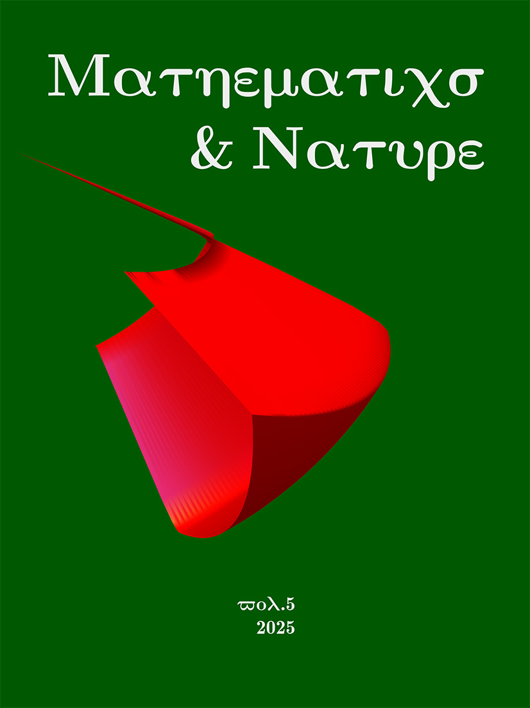
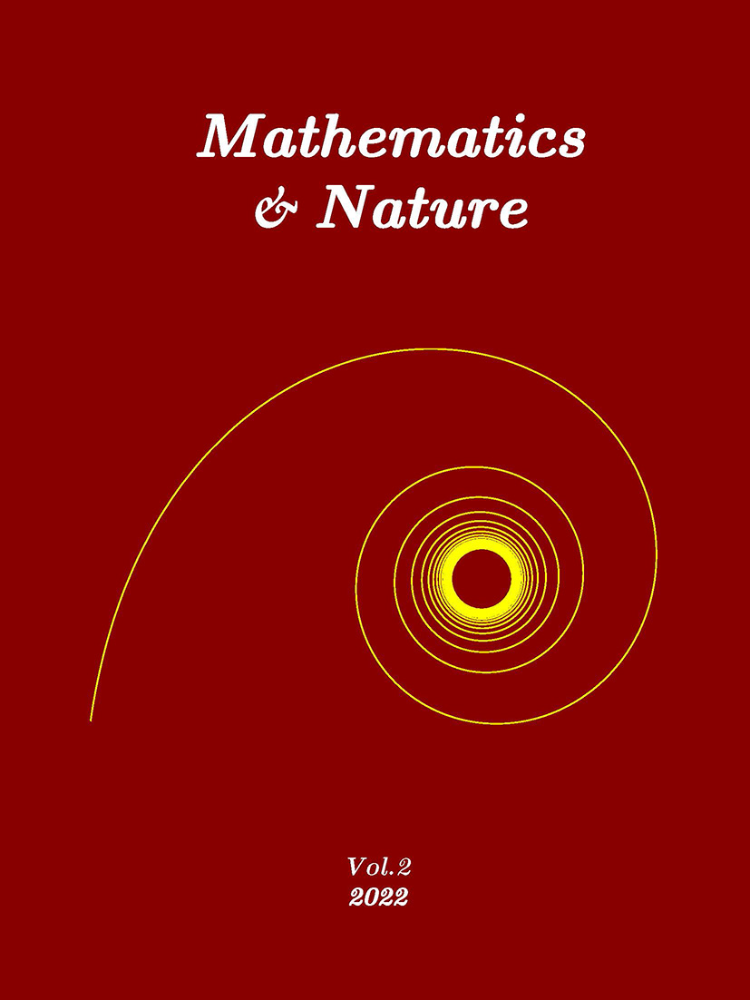
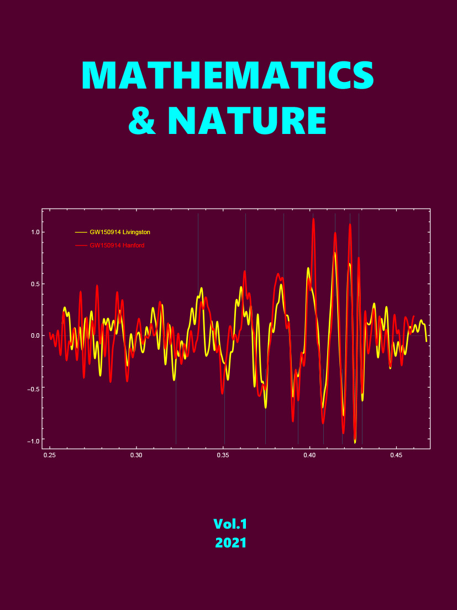

;
; About
Mathematics & Nature, the new type of scientific journal, bears the historical responsibility of recording those great scientific ideas shamelessly stifled, defamed, and even plagiarized by so-called reputable and influential mainstream scientific journals. Even though mainstream scholars who always prioritize personal fame and fortune over scientific truth will continue to suppress and defame them for a long time, these great scientific ideas, based on the highest wisdom, stand at the top of the unchallenged world and will undoubtedly lead the scientific world for thousands of years in the future. The great scientific truth will not yield to the spirit of evil and ugly souls, shining like the sun here.
ReadMe
Readers often require authors to publish papers in mainstream journals. But the reality is that influential mainstream journals with the highest responsibility of publishing articles on celebrity lies and maintaining the fame and fortune of lying celebrities have never and will never introduce significant breakthrough discoveries by non-famous scholars that far exceed their own. Even some well-known mainstream academic websites often allow original authors to publish their articles in preprint form only after some key content of breakthrough paper manuscripts by non-renowned scholars has been plagiarized, hypocritically demonstrating the fairness and justice advocated by preprint server controllers. Discoverers seeking truth therefore have to create self-media journals, break through the crazy blockade and strangulation of fame and fortune mainstream, and spread great scientific truths to the world with tenacious perseverance. Mathematics and Nature is one of the self-media journals that emerged in this historical context. Readers will be able to read about a series of significant breakthroughs in mathematics and science that powerful mainstream academic groups cannot achieve in more time from Mathematics and Nature. Insight into the motives and outcomes of mainstream scholars who have been stifling and defaming major breakthrough discoveries, recognize the ignorance, arrogance, hypocrisy, greed, and immorality of mainstream scholars, and see through the ugly face hidden under the glamorous veil of mainstream scholars. The journal Mathematics and Nature plans to publish 100 major breakthrough papers, introducing unparalleled scientific discoveries since Newton, exposing the essence of the erroneous and absurd theories packaged by the magnificent Nobel Medal based on false mathematical calculations and fabricated observational data in experimental reports. For nearly 100 years, the Nobel Prize jury has been intentionally, unintentionally, or controlled by power, constantly awarding medals and bonuses to erroneous theories and false experimental reports that they do not understand at all. They have turned ignorant and immoral individuals into heroes in the scientific community, making them shining lighthouses in the boundless ocean of science. The actual effect is to guide scientific research towards lies and fraud. Mathematics and Nature, with its weak power, strives to promote scientific righteousness and alert future moral individuals to participate in the leadership work of the scientific community. People all over the world who pursue truth unite and strive to realize our common great wish.
Volumes
Covers |
Contents |
|  |
31. Dongfang Brief General Solutions to Congruence Equations 32. The Logical Entropy Change of Euler Infinite Descent Method 33. Several Dongfang Proofs of The Third Power Fermat Last Theorem 34. Several Dongfang Proofs of The Fourth Power Fermat Last Theorem 35. Dongfang Inequality for Integer Solutions of Fermat Equation 36. Dongfang Elementary Algebra of Fermat Last Theorem 37. Various Incomplete Equivalent Constructions of Pythagorean Triples 38. Dongfang Solutions of Several Quadratic Diophantine Equations 39. Dongfang Solution to Sum of Powers of Continuous Natural Numbers 40. Dongfang Annotations on Several Combinatorial Problems |
 |
26. Dongfang General Entangled Spherical Harmonic Functions 27. Dongfang General Entangled Solution of Schrödinger Hydrogen Equation 28. Dongfang General Entangled Schrödinger Wave Function of Hydrogen 29. Dongfang General Entangled Spherical Solution of Laplace Equation 30. The Steady-State Entangled Solution of Dongfang Real Wave Equation |
 |
21. Broad Spectrum Solutions of Associated Legendre Equation 22. Dongfang Special Entangled Spherical Harmonic Functions 23. Dongfang Special Entangled Solution of Schrödinger Hydrogen Equation 24. Dongfang Special Entangled Schrödinger Wave Function of Hydrogen 25. Dongfang Special Entangled Spherical Solution of Laplace Equation |
|  |
11. The End of Klein-Gordon Equation for Coulomb Field 12. The End of Teratogenic Simplified Dirac Hydrogen Equations 13. Dongfang Solution of Induced Second Order Dirac Equations 14. The End of Isomeric Second Order Dirac Hydrogen Equations 15. The End of True Second Order Dirac Hydrogen Equation 16. Dongfang Challenge Solution of Dirac Hydrogen Equation 17. Neutron State Solution of Dongfang Modified Dirac Equation 18. Ground State Solution of Dongfang Modified Dirac Equation 19. The End of Dirac Hydrogen Equation in One Dimension 20. Multiple Morbid Mathematics of Dirac Electron Theory |
|  |
● Manifesto of Com Quantum Theory 1. On the relativity of the speed of light 2. The Morbid Equation of Quantum Numbers 3. Relativistic Equation Failure for LIGO Signals 4. Dongfang Modified Equations of Molecular Dynamics 5. Dongfang Angular Motion Law and Operator Equations 6. Dongfang Com Quantum Equations of LIGO Signal 7. Com Quantum Proof of LIGO Binary Mergers Failure 8. Dongfang Modified Equations of Electromagnetic Wave 9. Nuclear Force Constants Mapped by Yukawa Potential 10. The End of Yukawa Meson Theory of Nuclear Forces |